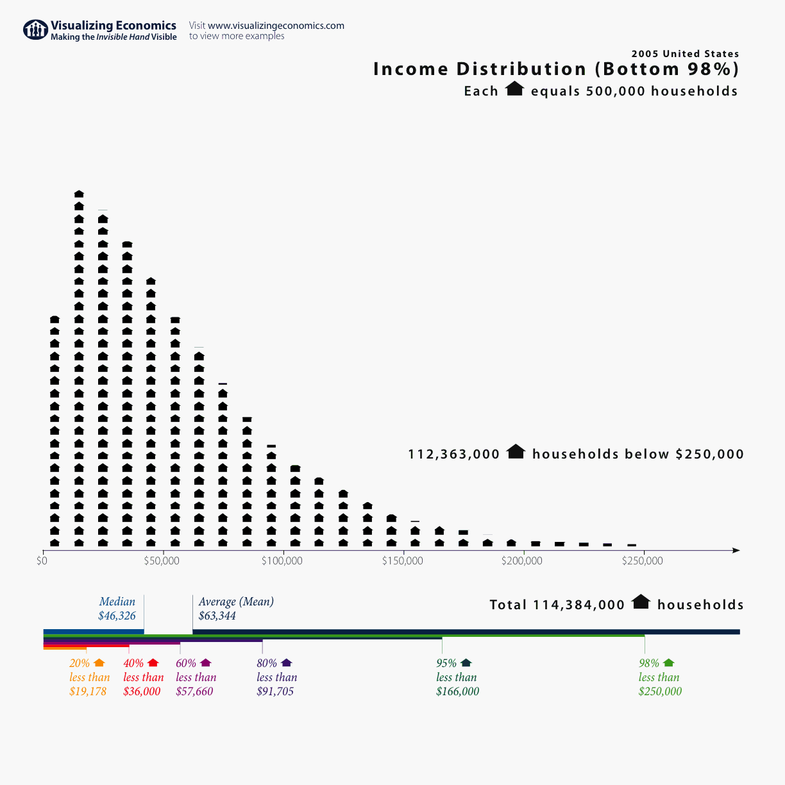

| lifetimeRS | freq |
|---|---|
| 0 | 38 |
| 1 | 17 |
| 2 | 7 |
| 3 | 6 |
| 4 | 4 |
| 5 | 10 |
| 6 | 2 |
| Lifetime reproductive success of male sparrows. | |
A frequency table. Data from Jensen et al. 2004. Journal of Animal Ecology 73: 599-611.
Unit2: Stats
September 14, 2026
2005 U.S. Census. The plot shows the income per household distribution for the bottom 98% of the population. Median = k; Mean:
k; Mode: [
]. Why?

How many variables are present here?
Frequency tables show the number of times, a value,
, is observed in a sample of size
We calculate the mean from a frequency table by summing the product of and
all values and diving by
.
| lifetimeRS | freq |
|---|---|
| 0 | 38 |
| 1 | 17 |
| 2 | 7 |
| 3 | 6 |
| 4 | 4 |
| 5 | 10 |
| 6 | 2 |
| Lifetime reproductive success of male sparrows. | |
A frequency table. Data from Jensen et al. 2004. Journal of Animal Ecology 73: 599-611.
Lifespan of forager bees (in hours).
[1] 2.3 2.3 3.9 4.0 7.1 9.5 9.6 10.8 12.8 13.6 14.6 18.2 18.2 19.0 20.9
[16] 24.3 25.8 25.9 26.5 27.1 30.0 33.3 34.8 34.8 35.7 36.9 41.3 44.2 54.2 55.8
[31] 65.8 71.1 84.72.3 2.3 3.9 4.0 7.1 9.5 9.6 10.8 12.8 13.6 14.6 18.2 18.2 19.0 20.9 24.3 25.8 25.9 26.5 27.1 30.0 33.3 34.8 34.8 35.7 36.9 41.3 44.2 54.2 55.8 65.8 71.1 84.7
# A tibble: 33 × 3
hours `Y-meanY` `(Y-meanY)^2`
<dbl> <dbl> <dbl>
1 2.3 -25.5 653.
2 2.3 -25.5 653.
3 3.9 -23.9 574.
4 4 -23.8 569.
5 7.1 -20.7 430.
6 9.5 -18.3 337.
7 9.6 -18.2 333.
8 10.8 -17.0 291.
9 12.8 -15.0 226.
10 13.6 -14.2 203.
# ℹ 23 more rows[1] 13520.96So
Note: the unit here is hours squared. Also, note that we don’t divide by but by
.
[1] 2.3 2.3 3.9 4.0 7.1 9.5 9.6 10.8 12.8 13.6 14.6 18.2 18.2 19.0 20.9
[16] 24.3 25.8 25.9 26.5 27.1 30.0 33.3 34.8 34.8 35.7 36.9 41.3 44.2 54.2 55.8
[31] 65.8 71.1 84.71st quartile:
3rd quartile:
If is integer,
If is not integer, round up to the next integer. Then,
, where
is now the integer rounded up to. Same for Q3.
1st quartile:
3rd quartile:
If is integer,
If is not integer, round up to the next integer. Then,
, where
is now the integer rounded up to. Same for Q3.
Min. 1st Qu. Median Mean 3rd Qu. Max.
2.30 12.80 25.80 27.85 35.70 84.70 [1] 22.9